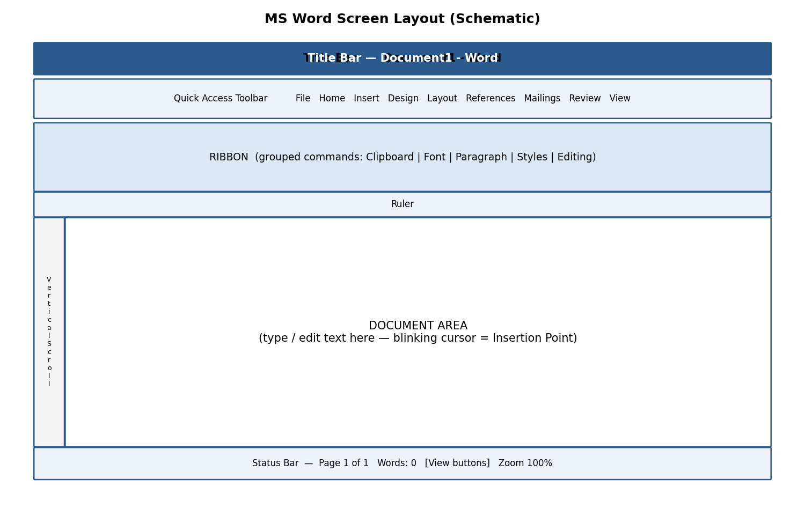

Detailed, exam-oriented notes covering every syllabus unit.
Hardware vs software: hardware is the physical computer (CPU, memory, storage, input/output devices); software is the set of programs that instruct the hardware — system software (operating system) manages resources, while application software (like MS Office) performs user tasks.
MS Office suite: a bundled set of productivity applications — Word (documents), Excel (spreadsheets/calculations), PowerPoint (presentations), and Access (databases) — sharing a common Ribbon-based interface for consistency across applications.
Backstage view (File tab) is where you open, save, print and manage document properties, distinct from the Ribbon which holds in-document editing commands organized into tabs and groups.
| Application | Purpose (English) |
|---|---|
| MS Word | A word-processing program used to create, edit, and format text documents such as letters, reports, resumes, and notices. |
| MS Excel | A spreadsheet program used for storing data in rows and columns, performing calculations, and analysing numeric data. |
| MS PowerPoint | A presentation program used to design slide shows containing text, images, charts, audio and video for effective communication. |
MS Word — पत्र, रिपोर्ट, बायोडाटा एवं सूचनाएँ जैसे पाठ (टेक्स्ट) दस्तावेज़ बनाने, संपादित करने तथा फॉर्मेट करने का प्रोग्राम।
MS Excel — पंक्तियों (rows) व स्तंभों (columns) में डेटा संग्रहीत करने, गणनाएँ करने तथा संख्यात्मक डेटा का विश्लेषण करने का प्रोग्राम।
MS PowerPoint — पाठ, चित्र, चार्ट, ऑडियो और वीडियो युक्त स्लाइड शो डिज़ाइन करने का प्रोग्राम, जो प्रभावी संप्रेषण (communication) के लिए उपयोग होता है।
Ensure the computer meets the minimum system requirements (Windows 10/11 or macOS, at least 4 GB RAM, 4 GB free disk space, and an internet connection for activation).
Purchase a genuine licence or subscription (Microsoft 365) from the official Microsoft website (www.office.com) or use the licence key/DVD provided by your institution.
Sign in (or create a free Microsoft account) at www.office.com using your email ID.
Click Install Office (or Install apps) on the account/subscription page.
Run the downloaded setup file (OfficeSetup.exe on Windows). Allow the User Account Control (UAC) prompt by clicking Yes.
Wait while the installer downloads and installs all the applications (Word, Excel, PowerPoint, Outlook, etc.). A progress screen with a rotating animation is shown.
Once installation finishes, click Close, then open any Office application and sign in again to Activate Office using your account.
Verify the installation by opening Word/Excel/PowerPoint from the Start Menu and checking Account or File → Account to confirm the product is activated (it will show 'Product Activated').
स्थापना (installation) से पहले सुनिश्चित करें कि कंप्यूटर की न्यूनतम आवश्यकताएँ पूरी हों। आधिकारिक वेबसाइट www.office.com से लॉग-इन करें, 'Install Office' पर क्लिक करें, डाउनलोड हुई सेटअप फ़ाइल चलाएँ, User Account Control अनुमति दें, और स्थापना पूर्ण होने पर खाते से साइन-इन कर सॉफ्टवेयर सक्रिय (activate) करें।
Method 1 — Start Menu: Click the Windows Start button (bottom-left corner) → type the application name (e.g., 'Word') in the search box → click on the matching result.
Method 2 — Desktop/Taskbar shortcut: Double-click the application icon on the Desktop, or single-click its pinned icon on the Taskbar.
Method 3 — From File Explorer: Navigate to an existing file with the matching extension (.docx, .xlsx, .pptx) and double-click it; the associated application opens automatically along with that file.
On the Start Screen that appears, choose 'Blank document/workbook/presentation' to begin a new file, or select a template, or click 'Open Other Documents/Workbooks/Presentations' to open an existing file.
एप्लीकेशन खोलने के तीन सामान्य तरीके हैं: (1) स्टार्ट मेनू से खोजकर, (2) डेस्कटॉप/टास्कबार के शॉर्टकट आइकन पर क्लिक करके, या (3) पहले से मौजूद फ़ाइल पर डबल-क्लिक करके। खुलने के बाद प्रारंभिक स्क्रीन पर 'Blank document' चुनकर नया दस्तावेज़ शुरू करें अथवा किसी टेम्पलेट का चयन करें।
| Operation | Effect (English) | प्रभाव (Hindi) |
|---|---|---|
| New (Ctrl+N) | Creates a fresh, blank file so you can start typing/entering data from scratch. | एक नई खाली फ़ाइल बनाता है। |
| Open (Ctrl+O) | Displays a dialog box to browse to and load an existing file saved on the computer, a USB drive, or cloud storage (OneDrive). | पहले से सहेजी गई फ़ाइल को खोजकर लोड करने के लिए संवाद बॉक्स दिखाता है। |
| Save (Ctrl+S) | Stores the current state of the file to disk under its existing name and location. If the file has never been saved, Save behaves like Save As and asks for a name/location. | फ़ाइल को उसके वर्तमान नाम व स्थान पर सहेजता है। |
| Save As (F12) | Opens a dialog box that lets you choose a NEW name, a new location (folder/drive), and a different file format (e.g., saving a .docx as a .pdf or as a .doc for older Word versions) — the original file remains untouched if you change the name. | नया नाम, नया स्थान अथवा भिन्न फ़ाइल फॉर्मेट चुनकर सहेजने की सुविधा देता है। |
| Close (Ctrl+W) | Closes the currently open file. If unsaved changes exist, a prompt appears asking whether to save, discard, or cancel. | वर्तमान में खुली फ़ाइल को बंद करता है। |
Click the File tab (top-left corner) → Save As (or press F12 / Ctrl+Shift+S).
Choose a location: This PC (a folder on the hard disk), Browse (to pick any specific folder), or OneDrive (to save online).
In the File name box, type a meaningful name for the file (avoid special characters such as \ / : * ? " < > |).
In the Save as type drop-down, confirm the file format — Word Document (*.docx), Excel Workbook (*.xlsx), or PowerPoint Presentation (*.pptx) are the modern default formats.
Click Save. The title bar now displays the new file name, confirming the save was successful.
For subsequent edits, simply press Ctrl+S at regular intervals — this is good practice to avoid losing work due to power failure or a system crash.
Common file formats:
| Application | Default (Modern) Format | Other Common Formats |
|---|---|---|
| Word | .docx | .doc / .pdf / .rtf / .txt / .odt |
| Excel | .xlsx | .xls / .csv / .pdf / .ods |
| PowerPoint | .pptx | .ppt / .pdf / .pptx (Show) / .jpg per slide |
AutoSave / AutoRecover: Office automatically saves a temporary recovery copy of your work every few minutes (configurable under File → Options → Save). If the application closes unexpectedly, the Document Recovery pane offers to restore the last auto-saved version.
Always keep a backup copy of important files on a pen-drive or cloud storage (OneDrive/Google Drive) in addition to the local hard disk.
Use descriptive file names with dates, e.g., 'Fee_Report_July2026.xlsx', instead of vague names like 'Document1.docx', so files are easy to locate later.
✎ Exercise 0.1 (Practice / अभ्यास)
Open MS Word, type your name and course details, save the file as 'MyFirstDocument' in Word format inside a folder named with your Roll Number, then close and reopen it to confirm it was saved correctly.
Repeat the same New → Type → Save As → Close → Open cycle in MS Excel and MS PowerPoint.
Formatting hierarchy: character formatting (font, size, colour, bold/italic) → paragraph formatting (alignment, line spacing, indentation) → document-level formatting (styles, themes) — using Styles consistently makes documents easier to update and to convert into a table of contents automatically.
Page layout: margins, orientation, headers/footers and page numbering are controlled from the Layout/Insert tabs; Section Breaks allow different layouts (e.g. portrait vs landscape) within one document.
Mail merge combines a main document (e.g. a letter) with a data source (e.g. an Excel list of names/addresses) to generate personalized copies automatically — a key productivity skill for bulk correspondence.
Reviewing tools: Track Changes records edits with author attribution for collaborative review; Comments allow feedback without altering the text directly; both are essential for collaborative report writing.
Microsoft Word is a Word Processing System (WPS) — a software application used to compose, edit, format, save and print text-based documents. Unlike a typewriter, a word processor allows unlimited correction, reformatting, and reuse of text before final printing.
माइक्रोसॉफ्ट वर्ड एक 'वर्ड प्रोसेसिंग सिस्टम' है — एक ऐसा सॉफ्टवेयर जिससे पाठ आधारित दस्तावेज़ों को रचना, संपादन (edit), फॉर्मेट, सेव तथा प्रिंट किया जा सकता है। टाइपराइटर के विपरीत, वर्ड प्रोसेसर में अंतिम प्रिंट से पहले असीमित सुधार तथा पुनः प्रारूपण संभव है।

Fig 1.1 — Schematic layout of the MS Word screen
Key parts of the Word screen:
Title Bar — shows the file name and application name; contains Minimize, Restore/Maximize and Close buttons on the right.
Quick Access Toolbar (QAT) — a customisable strip of frequently-used commands (Save, Undo, Redo) placed above or below the ribbon.
Ribbon — a panel of tabs (File, Home, Insert, Design, Layout, References, Mailings, Review, View) each containing groups of related commands shown as icons/buttons.
Ruler — horizontal and vertical guides (View → Ruler) used to gauge margins, indents and tab stops.
Document Area (Text Area) — the blank workspace where the blinking vertical line, called the Insertion Point (cursor), shows where the next typed character will appear.
Scroll Bars — vertical and horizontal bars to move up/down or left/right through a long document.
Status Bar — bottom strip showing page number, word count, language, and View/Zoom controls.
The Ribbon replaced the old menu-and-toolbar system from Word 2007 onwards. Every command a user needs is visible as a picture-labelled button, organised logically into Tabs → Groups → Commands, so users do not need to search through nested menus.

Fig 1.2 — Ribbon Tabs and Command Groups (Home tab example)
Tab — a top-level category, e.g., Home, Insert, Design.
Group — a labelled cluster inside a tab, e.g., the 'Font' group inside Home.
Dialog Box Launcher — the small diagonal arrow (⤡) at the bottom-right corner of some groups; clicking it opens a full dialog box with more options (e.g., clicking the Font group launcher opens the complete Font dialog box).
You can minimise the Ribbon (Ctrl+F1) to gain more screen space for the document, and restore it the same way.
रिबन में सभी कमांड चित्र-चिह्नित बटनों के रूप में टैब → ग्रुप → कमांड के क्रम में व्यवस्थित होते हैं, जिससे उपयोगकर्ता को पुराने मेनू सिस्टम की तरह खोजना नहीं पड़ता।
Typing text: Simply click inside the document area (to place the insertion point) and start typing on the keyboard. Word automatically wraps text to the next line when the current line is full — you should NOT press Enter at the end of every line; press Enter only to start a new paragraph.
Alignment of text (Home tab → Paragraph group) controls how text lines up horizontally with respect to the page margins:
| Alignment | Shortcut Key | Effect |
|---|---|---|
| Left Align | Ctrl+L | Text starts flush with the left margin (default for most documents). |
| Centre Align | Ctrl+E | Text is centred between the left and right margins — used for titles and headings. |
| Right Align | Ctrl+R | Text is flush with the right margin — used for dates or signatures. |
| Justify | Ctrl+J | Text is stretched evenly so both left and right edges are straight — used in newspapers and books. |
पाठ का संरेखण (alignment) यह निर्धारित करता है कि पंक्तियाँ पृष्ठ के हाशियों (margins) के सापेक्ष कैसे व्यवस्थित हों — बायाँ, मध्य, दायाँ अथवा दोनों ओर से समान (justify)।
Editing means modifying text already typed. Before most editing commands can act, the relevant text must first be Selected (highlighted).
Select text: click and drag the mouse over the text, OR click at the start and Shift+click at the end, OR double-click a word to select it, OR triple-click a paragraph to select the whole paragraph.
Select All — Ctrl+A: selects the entire content of the document in one action (Home tab → Editing group → Select → Select All).
Cut — Ctrl+X: removes the selected text/object and places it on the Clipboard (temporary memory) for use elsewhere.
Copy — Ctrl+C: duplicates the selected text/object onto the Clipboard while leaving the original in place.
Paste — Ctrl+V: inserts the Clipboard's content at the current cursor position. Paste Options (Keep Source Formatting / Merge Formatting / Keep Text Only) appear as a small icon after pasting.
Clear (Delete key or Home → Font → Clear Formatting): removes selected text, or strips all character formatting back to the default style, without deleting the text itself.
Find (Ctrl+F): opens the Navigation Pane to search for a word or phrase throughout the document, highlighting every match.
Replace (Ctrl+H): opens the Find and Replace dialog box, allowing a search term to be substituted — one at a time (Replace) or throughout the document (Replace All).
Example: To correct every occurrence of the misspelling 'recieve' to 'receive' in a 10-page document instantly, press Ctrl+H, type 'recieve' in Find what, type 'receive' in Replace with, and click Replace All.
संपादन (editing) का अर्थ है पहले से टाइप किए गए पाठ में परिवर्तन करना — जैसे काटना (Cut), नक़ल करना (Copy), चिपकाना (Paste), खोजना (Find) और बदलना (Replace)। अधिकांश आदेशों के लिए पहले पाठ को चुनना (select) आवश्यक है।
These operations (New, Open, Close, Save, Save As) are common to all Office applications and are covered in detail in Chapter 0, Section 0.3. In Word specifically:
New (Ctrl+N) opens a blank document, or File → New shows built-in templates (resume, letter, report).
Open (Ctrl+O) browses to and loads an existing .docx/.doc file.
Save (Ctrl+S) stores changes; Save As (F12) stores under a new name/location/format.
Close (Ctrl+W) closes the active document window without closing the Word application itself.
Formatting improves readability and visual appeal without changing the actual words. The Home tab → Font group contains most character-level formatting tools:
| Command | Shortcut | Purpose |
|---|---|---|
| Font Size | Ctrl+Shift+> / < | Increases/decreases the height of characters, measured in points (pt); body text is usually 11-12 pt, headings 14-28 pt. |
| Font Style (Typeface) | — | Changes the design of characters, e.g., Calibri, Times New Roman, Arial. |
| Font Colour | — | Changes the colour of the text via the Font Colour bucket icon. |
| Bold | Ctrl+B | Thickens the strokes of characters for emphasis. |
| Italic | Ctrl+I | Slants characters, often used for titles of books or foreign words. |
| Underline | Ctrl+U | Draws a line beneath the text. |
| Change Case | Shift+F3 | Cycles text between Sentence case, lowercase, UPPERCASE, Capitalize Each Word, and tOGGLE cASE. |
Paragraph-level formatting (Home tab → Paragraph group, or Layout tab → Paragraph group):
Line Spacing — the vertical gap between lines within a paragraph (e.g., single, 1.5 lines, double). Set via the Line and Paragraph Spacing icon.
Paragraph Spacing — extra space added Before or After a paragraph (Layout tab → Spacing → Before/After), used instead of pressing Enter twice, which keeps spacing consistent throughout the document.
Tabs — pressing the Tab key moves the cursor to the next tab stop (default every 0.5 inch); custom tab stops (left, centre, right, decimal, bar) can be set by clicking on the ruler or via Home → Paragraph → dialog launcher → Tabs button.
Indents — control how far a paragraph is pushed in from the margin: First Line Indent (only the first line), Hanging Indent (all lines except the first — common in bibliographies), and Left/Right Indent (the whole paragraph).
फॉर्मेटिंग से पठनीयता (readability) व आकर्षकता बढ़ती है। फॉन्ट साइज़, शैली, रंग, बोल्ड, इटैलिक, अंडरलाइन जैसे उपकरण अक्षर-स्तर पर कार्य करते हैं, जबकि लाइन स्पेसिंग, पैराग्राफ स्पेसिंग, टैब्स व इंडेंट पूरे पैराग्राफ के स्वरूप को नियंत्रित करते हैं।
✎ Exercise 1.5 (Practice / अभ्यास)
Type a paragraph of at least 5 sentences about your favourite hobby. Apply: Font = Times New Roman, Size = 12, first line indent = 0.5", line spacing = 1.5, and justify alignment.
Type the heading 'MY DAILY ROUTINE' and format it as Bold, 18 pt, centred, and in a different colour from the body text.
A Style is a saved, named set of formatting instructions (font, size, colour, spacing) that can be applied in one click, ensuring consistency throughout a long document. Styles are available in the Home tab → Styles gallery.
Using Built-in Styles: select text and click a style thumbnail (Normal, Heading 1, Heading 2, Title, Quote, etc.) in the Styles gallery.
Modifying a Style: right-click a style in the gallery → Modify → change font/size/colour/spacing → click OK; every place that style is used updates automatically.
Creating a New Style: format a piece of text exactly as desired, select it, open the Styles pane (Ctrl+Alt+Shift+S), click New Style, give it a name, and click OK.
Creating a List Style: in the Styles pane, choose New Style → Style type: List, then define the numbering/bullet format that will repeat consistently wherever the style is applied.
Table of Contents (TOC) and References:
Apply Heading 1 / Heading 2 styles to all chapter and section titles throughout the document.
Click at the location where the TOC should appear (usually right after the title page).
Go to References tab → Table of Contents → choose an Automatic Table style.
Word scans the document for headings and builds a clickable, page-numbered TOC automatically.
If content is added or removed later, click anywhere inside the TOC and press Update Table (or F9) to refresh page numbers.
Adding Internal (Cross-) References: References tab → Cross-reference — lets you refer to 'see Figure 3' or 'see Table 2' so the number updates automatically if the figure is moved.
Adding a Footnote (References tab → Insert Footnote, or Alt+Ctrl+F): places a small superscript number in the text and a corresponding note at the BOTTOM of the same page — used for citations or brief clarifications.
Adding an Endnote (References tab → Insert Endnote, or Alt+Ctrl+D): similar to a footnote, but all notes collect together at the END of the document/section instead of the page bottom.
स्टाइल (Style) फॉर्मेटिंग का एक सुरक्षित नामित समूह है, जिसे एक क्लिक में लागू किया जा सकता है। हैडिंग स्टाइल का उपयोग करने पर 'Table of Contents' (विषय-सूची) स्वतः तैयार हो जाती है। फ़ुटनोट पृष्ठ के नीचे तथा एंडनोट दस्तावेज़ के अंत में दिखाई देते हैं।
Lists organise related items for clarity. Home tab → Paragraph group offers three list buttons: Bullets, Numbering, and Multilevel List.
Bulleted List: applies a symbol (•, ○, ■) before each list item — used when the order of items does not matter.
Numbered List: applies sequential numbers/letters (1, 2, 3… or a, b, c…) — used when sequence or ranking matters (e.g., steps of a procedure).
Multilevel List: combines several levels of numbering/bullets (1, 1.1, 1.1.1…) for outlines, legal documents, and syllabi such as this one — press Tab to demote and Shift+Tab to promote an item to a different level.
Customising a List Style: click the drop-down arrow next to Bullets/Numbering → Define New Bullet / Define New Number Format to choose a custom symbol, font, colour, or numbering style (Roman numerals, alphabets, etc.).
✎ Exercise 1.7 (Practice / अभ्यास)
Create a numbered list of the 5 subjects you are studying this semester.
Create a multilevel list outlining a project report with at least 2 levels, e.g., 1. Introduction, 1.1 Background, 1.2 Objectives, 2. Methodology …
The Insert tab lets you enrich a document with non-text elements.
Shapes (Insert → Shapes): ready-made geometric outlines (rectangles, arrows, callouts, flowchart symbols) drawn by click-and-drag.
Clip Art & Pictures (Insert → Pictures): inserts an image from 'This Device', 'Stock Images', or 'Online Pictures'; once inserted, the Picture Format tab appears for cropping, resizing, applying artistic effects and picture styles/borders.
WordArt (Insert → WordArt): inserts stylised, decorative text with preset colour/outline/shadow effects — good for document titles or banners.
SmartArt (Insert → SmartArt): inserts a ready-made diagram (list, process, cycle, hierarchy/org-chart, relationship) into which you simply type text — Word automatically arranges shapes and connecting lines.
Columns (Layout tab → Columns): splits the page text into 2, 3, or custom vertical columns, like a newspaper.
Change the order of objects: right-click an object → Bring Forward / Send Backward / Bring to Front / Send to Back, to control which object appears on top when several overlap.
Page Number, Date & Time (Insert tab): automatically inserts and updates the current page number, or today's date/time, at the cursor position.
Text Boxes (Insert → Text Box): a movable, resizable frame that can hold independent text anywhere on the page, useful for pull-quotes or labels.
Symbols (Insert → Symbol): inserts special characters not on the keyboard, e.g., ©, ±, α, ₹.
Chart (Insert → Chart): embeds an editable Excel-linked chart (column, line, pie, etc.) directly inside the Word document.
Page Background (Design tab → Page Color / Page Borders / Watermark): adds a background colour, a decorative page border, or faded watermark text (e.g., 'DRAFT' or 'CONFIDENTIAL') behind the main text.
✎ Exercise 1.8 (Practice / अभ्यास)
Insert a SmartArt hierarchy diagram showing your college's organisational structure (Principal → HOD → Faculty → Students).
Insert a picture, resize it to fit within a paragraph of text with 'Square' text wrapping, and add a caption below it.
Add a light watermark reading 'SAMPLE' to a one-page practice document.

Fig 1.3 — Structure of a table
A Table organises data into a grid of Rows (horizontal) and Columns (vertical); the intersection of a row and a column is called a Cell.
Creating & Inserting a Table: Insert tab → Table → drag across the grid to choose the number of rows/columns, or click Insert Table to type exact numbers, or use Draw Table for an irregular table.
Table Formatting: click inside the table to reveal the contextual Table Design and Layout tabs.
Table Styles (Table Design tab): one-click preset colour/border themes for the whole table.
Alignment Options (Layout tab → Alignment group): align text within cells (top-left, centre, bottom-right, etc.) and control text direction.
Merge & Split (Layout tab → Merge group): Merge Cells combines two or more selected cells into one (e.g., for a table title spanning several columns); Split Cells divides one cell into several.
Manual and Automatic Editing: rows/columns can be added or removed manually (right-click → Insert/Delete), or a table can auto-adjust column width to fit its content (Layout → AutoFit).
Use of Tables for Figures and Footnotes: tables are often used 'invisibly' (borders removed) to precisely align a figure with its caption/footnote text below it.
✎ Exercise 1.9 (Practice / अभ्यास)
Create a 5×4 table listing Roll No., Name, Subject, and Marks for 4 students. Apply a built-in Table Style, merge the top row into one cell for the title 'Mark Sheet', and centre-align all data.
Page Border (Design tab → Page Borders): places a decorative line, box, shadow, 3-D, or art border around the entire page — useful for certificates and invitations.
Shading Text and Paragraph (Home tab → Paragraph → Shading bucket icon): applies a background colour behind selected text or an entire paragraph, e.g., to highlight important notices.
The Header is the area at the TOP margin and the Footer is the area at the BOTTOM margin of every page — ideal for repeating information like a document title, chapter name, page number, author, or logo.
Go to Insert tab → Header (or Footer) → choose a built-in design, or click Edit Header/Footer, or simply double-click the top/bottom margin area of the page.
Type or insert content (text, page number, date, picture/logo) — it will repeat automatically on every subsequent page.
The Header & Footer Design tab lets you insert objects into the header/footer, such as Page Number (with page X of Y format), Date & Time, and Pictures.
Adding a Section Break (Layout tab → Breaks → Section Breaks) before a page allows that section to have a DIFFERENT header/footer (e.g., no page number on the title page, Roman numerals for the preface, and Arabic numerals for the main chapters) — inside Header & Footer Design, toggle off 'Link to Previous' to disconnect it from the earlier section.
Click Close Header and Footer (or double-click inside the body text) to return to normal editing.
हैडर पृष्ठ के ऊपरी भाग में तथा फ़ुटर निचले भाग में स्थित होता है, जो प्रत्येक पृष्ठ पर दोहराई जाने वाली जानकारी (जैसे शीर्षक, पृष्ठ संख्या) दिखाने के लिए प्रयुक्त होता है। सेक्शन ब्रेक जोड़कर विभिन्न भागों में भिन्न हैडर/फ़ुटर रखे जा सकते हैं।

Fig 1.4 — Mail merge process flow
Mail Merge combines a single main document (e.g., an invitation letter) with a list of unique recipient details (names, addresses) to automatically generate many personalised copies — extremely useful for bulk letters, certificates, mailing labels, and envelopes.
Start the main document (e.g., an invitation letter) in Word.
Go to Mailings tab → Start Mail Merge → choose the output type: Letters, E-mail Messages, Envelopes, Labels, or Directory.
Select Recipients: Type a New Address List (fill a small built-in form), or Use an Existing List (browse to and import an Excel file/CSV containing the recipient data), or Choose from Outlook Contacts.
Click Insert Merge Field to place placeholders (e.g., «FirstName», «Address») at the desired positions in the letter, wherever personalised data should appear.
Click Preview Results to see how the letter looks with actual data substituted for each recipient, one at a time.
Set rules for merges (Mailings → Rules) for conditional content, e.g., an 'If…Then…Else' rule to show 'Mr.' or 'Ms.' based on a Gender field.
Click Finish & Merge → choose Print Documents (send directly to the printer), Edit Individual Documents (creates one combined file with a separate letter per recipient), or Send E-mail Messages.
Merging to Envelopes / Labels follows the same steps but starts by choosing Envelopes/Labels under Start Mail Merge, and selecting the correct envelope/label size.
Example: A college wants to send 200 personalised admit cards. The admit card template is the main document; a Roll No./Name/Exam Centre Excel sheet is the recipient list; mail merge produces 200 individually addressed admit cards in seconds instead of manually typing each one.
मेल मर्ज एक ही मुख्य दस्तावेज़ को प्राप्तकर्ताओं की सूची (जैसे एक्सेल फ़ाइल) से जोड़कर अनेक व्यक्तिगत प्रतियाँ (personalised copies) स्वतः तैयार करता है — जैसे सैकड़ों छात्रों के प्रवेश-पत्र एक साथ बनाना।
✎ Exercise 1.12 (Practice / अभ्यास)
Create an Excel sheet with columns Name, Course, and RollNo for 5 students. In Word, draft a simple 'Admit Card' letter with merge fields for these three, and complete a mail merge to produce 5 individual admit cards.
Check Spelling as You Type: Word underlines suspected misspellings with a red wavy line as you type; right-click the word for suggested corrections.
Mark Grammar Errors as You Type: grammar/style issues are underlined with a blue/gold wavy line; right-click for suggestions. The full check can also be run via Review tab → Editor / Spelling & Grammar (F7).
Setting AutoCorrect Options (File → Options → Proofing → AutoCorrect Options): configure automatic fixes for common typos (e.g., 'teh' → 'the'), automatic capitalisation of the first letter of sentences, and custom text replacements you define yourself.
Page Setup (Layout tab → Page Setup group, or dialog launcher): configure Margins (space between text and paper edge), Orientation (Portrait/Landscape), and Size (A4, Letter, Legal).
Setting Margins: choose a preset (Normal 1", Narrow 0.5", Wide) or click Custom Margins to type exact top/bottom/left/right values.
Print Preview: File tab → Print shows a live preview pane on the right, alongside settings for number of copies, specific page ranges, one-sided/two-sided printing, and which printer to use.
Print (Ctrl+P): sends the document to the selected printer once all settings are confirmed.
Beyond simply knowing the commands, a good document design follows some universal principles:
Consistency: use the same font family (usually just one for body text, one for headings) and consistent heading styles throughout.
White space: leave adequate margins and paragraph spacing; do not cram text edge-to-edge — this improves readability.
Visual hierarchy: larger/bolder text for titles, medium for sub-headings, and normal for body text helps the reader scan the document quickly.
Use of lists and tables: converting long comma-separated sentences into bullet points or a table makes information easier to compare and remember.
Meaningful headings and a Table of Contents make long documents (like a project report or thesis) navigable.
Alt Text for images (right-click picture → Edit Alt Text): improves accessibility for visually impaired readers using screen readers, and is good practice for all professional documents.
Proofread before sharing: always run spelling/grammar check and read the document once fully before printing or emailing it.
एक अच्छा दस्तावेज़ बनाने के लिए संगति (consistency), उचित रिक्त स्थान (white space), दृश्य पदानुक्रम (visual hierarchy), सूचियों व तालिकाओं का उपयोग, तथा भेजने से पहले प्रूफ़रीड करना — ये सभी सिद्धांत दस्तावेज़ को आकर्षक, उपयोगी व सुगम बनाते हैं।
This walkthrough ties together many commands covered above into a single realistic task — drafting a formal leave-application letter to the Head of Department (HOD).
Open a New blank document (Ctrl+N). Set the page margins to Normal (Layout tab → Margins → Normal).
Type today's date at the top, then press Enter twice, and Right-align (Ctrl+R) just the date line.
Return to Left alignment (Ctrl+L) and type the recipient's designation and department, e.g., 'To,\nThe Head of Department,\nDepartment of Computer Science'.
Leave one blank line, then type the salutation 'Respected Sir/Madam,' followed by another blank line.
Type the body of the letter in 3-4 sentences explaining the reason for leave, the dates, and a request for approval. Justify (Ctrl+J) this paragraph and set Line Spacing to 1.15 for comfortable readability.
Leave two blank lines, then type 'Yours sincerely,' followed by blank lines for a signature, and finally the student's name and roll number in Bold.
Select the entire letter and set the Font to Times New Roman, Size 12, for a formal appearance.
Insert a Footer (Insert → Footer) containing the college name in small, grey, italic text (Font Colour and Size adjusted accordingly).
Run Spelling & Grammar Check (F7) and correct any flagged issues.
Save As (F12) the file as 'LeaveApplication_<RollNo>.docx', then use Print Preview to confirm the layout before printing.
This single exercise practises alignment, spacing, font formatting, footers, and proofing all at once — the same workflow pattern (plan → type → format → proof → save → print) applies to almost any real-world Word document, from a resume to a project report.
यह अभ्यास संरेखण, स्पेसिंग, फॉन्ट फॉर्मेटिंग, फ़ुटर तथा प्रूफ़िंग को एक साथ जोड़ता है। योजना बनाना → टाइप करना → फॉर्मेट करना → जाँचना → सहेजना → प्रिंट करना — यही सामान्य प्रक्रिया लगभग किसी भी वास्तविक वर्ड दस्तावेज़ के लिए लागू होती है।
✎ Exercise 1.16 (Practice / अभ्यास)
Following the walkthrough above, draft your own formal Leave Application letter addressed to your HOD for 3 days of leave, applying every formatting step listed.
Academic: assignments, project reports, theses, research papers, question papers.
Official/Business: letters, memos, circulars, minutes of meetings, offer letters, contracts.
Personal: resumes/CVs, invitation cards, greeting cards, personal letters.
Publishing: newsletters, brochures, flyers using columns, WordArt, and page borders.
Mass communication: mail-merged letters, certificates, and mailing labels for large groups.
Not ideal for complex numeric calculations or large datasets — Excel is far better suited for that.
Very large documents with many embedded high-resolution images can become slow and prone to file corruption.
Precise pixel-level page-layout control (as needed in professional graphic design/DTP) is limited compared to dedicated desktop-publishing software like Adobe InDesign.
Collaborative real-time co-authoring requires all users to have compatible Office versions or a shared OneDrive/SharePoint account.
Automatic formatting (AutoCorrect, AutoFormat) occasionally makes unwanted changes if not configured carefully.
Cell referencing: a relative reference (e.g. A1) adjusts automatically when a formula is copied to another cell; an absolute reference (e.g. $A$1) stays fixed; a mixed reference (e.g. $A1 or A$1) fixes only the row or only the column.
Common functions: SUM() totals a range; AVERAGE() computes the mean; COUNT()/COUNTA() count numeric or non-blank cells; IF(condition, value_if_true, value_if_false) applies conditional logic (e.g. assigning Pass/Fail based on marks); VLOOKUP(lookup_value, table_array, col_index, [range_lookup]) retrieves matching data from a table — foundational for computing student grades from boundary conditions.
Sorting, filtering & conditional formatting let you organize and highlight data (e.g. automatically colouring marks below a passing threshold) without altering the underlying values.
Charts (column, line, pie, etc.) turn tabular data into visual insight and are inserted via the Insert tab, referencing a selected data range.
Microsoft Excel is an Electronic Spreadsheet program — software that stores and processes data arranged in a grid of rows and columns, allowing automatic calculation, analysis, and visualisation of numeric information.
माइक्रोसॉफ्ट एक्सेल एक इलेक्ट्रॉनिक स्प्रेडशीट प्रोग्राम है, जो पंक्तियों (rows) व स्तंभों (columns) की ग्रिड में डेटा संग्रहीत तथा संसाधित करता है, जिससे स्वचालित गणना, विश्लेषण व दृश्यांकन (visualisation) संभव होता है।

Fig 2.1 — Schematic layout of the MS Excel screen
Workbook — the entire Excel file (extension .xlsx); a single workbook can contain many worksheets.
Worksheet (Sheet) — one page/tab within a workbook, made up of the row-column grid; sheet tabs appear at the bottom, and new sheets are added via the '+' icon.
Rows — numbered 1, 2, 3 … running horizontally (a worksheet has 1,048,576 rows).
Columns — lettered A, B, C … Z, AA, AB … running vertically (a worksheet has 16,384 columns, up to XFD).
Cell — the intersection of a row and column, e.g., cell 'B5' is at the intersection of column B and row 5. Every cell has a unique Cell Address / Cell Reference.
Name Box — top-left box showing the address of the currently active cell (or a chosen name).
Formula Bar — displays the actual content (text, number, or formula) typed into the active cell, even if the cell itself displays a calculated result.
Naming Cells (Formulas tab → Define Name, or type directly in the Name Box): assigns a memorable name (e.g., 'TaxRate') to a cell/range so formulas can refer to 'TaxRate' instead of '$B$2', improving readability.
Navigate with the arrow keys, mouse click, or by typing a cell address into the Name Box and pressing Enter (e.g., type 'H25' to jump straight there).
Ctrl+Home jumps to cell A1; Ctrl+End jumps to the last used cell.
Select a range by clicking a cell and dragging, or clicking the first cell then Shift+clicking the last cell of a rectangular range (e.g., A1:D10).
Select an entire row/column by clicking its row number/column letter heading; select the whole sheet with Ctrl+A or the small triangle at the top-left corner of the grid.
Enter data: click a cell, type the value, and press Enter (moves down), Tab (moves right), or an arrow key to confirm and move to the neighbouring cell.
Excel auto-detects the data type: numbers align right, text aligns left, and dates are recognised and can be used in date arithmetic.
✎ Exercise 2.1 (Practice / अभ्यास)
Open a new workbook, rename Sheet1 to 'Marksheet', and enter a small table with headers Roll No, Name, Physics, Chemistry, Maths in row 1 for 5 students.
New, Open, Close, Save, and Save As work exactly as described in Chapter 0 — the default Excel format is Excel Workbook (*.xlsx); use Save As → CSV (Comma delimited) to export plain tabular data for use in other software.
| Command | Location | Purpose |
|---|---|---|
| Font Size / Style / Colour, Bold, Italic, Underline | Home tab → Font group | Same as Word — controls the appearance of cell content. |
| Wrap Text | Home tab → Alignment group | Displays long text on multiple lines within one cell instead of spilling into neighbouring cells or being cut off. |
| Merge & Centre | Home tab → Alignment group | Combines selected cells into one larger cell and centres the content — typically used for a table title spanning several columns. |
| Number Format | Home tab → Number group | Changes how a value is displayed: Currency (₹1,234.00), Accounting, Percentage, Date, Time, Fraction, Scientific — WITHOUT changing the underlying stored value. |
| Borders / Fill Colour | Home tab → Font group icons | Adds gridlines around cells or a background colour, useful for highlighting totals or headers. |
Formatting Rows, Columns & Cells: right-click a row/column header → Row Height / Column Width to set an exact size, or double-click the boundary to AutoFit to content.
Cutting, Copying, Pasting, Paste Special: Ctrl+X / Ctrl+C / Ctrl+V work as in Word; Paste Special (Ctrl+Alt+V) offers advanced options such as pasting only Values (result, not formula), only Formats, or Transpose (convert a row of data into a column, or vice-versa).
Inserting and Deleting: right-click a row/column/cell → Insert or Delete to add or remove it, shifting neighbouring cells accordingly.
Importing and Exporting Data: Data tab → Get Data / From Text-CSV imports external data; Save As → CSV exports the current sheet to a plain-text comma-separated file readable by almost any software.
Adding and Editing Borders, Headers and Footers: Page Layout tab → Print Titles, or Insert tab → Header & Footer (switches to Page Layout view) to add repeating headers/footers on printed pages.
Worksheet Management: right-click a sheet tab for Insert, Delete, Rename, Move or Copy, Tab Colour, and Hide/Unhide options — useful for comparing or reorganising multiple related sheets (e.g., 'Jan', 'Feb', 'Mar' sales sheets).
Conditional Formatting (Home tab → Conditional Formatting): automatically applies formatting (colour, icon, data bar) to cells that meet a rule, e.g., highlight all marks below 40 in red to flag failing students.
Linking Excel Data: typing '=Sheet2!A1' in one cell displays the live value from another sheet/cell — updates automatically if the source changes; data can even be linked across workbooks.
Freezing/Hiding Rows/Columns (View tab → Freeze Panes): keeps header rows/columns visible on screen while scrolling through a very long/wide sheet; Hide temporarily removes a row/column from view without deleting its data.
Find and Replace (Ctrl+F / Ctrl+H): same function as in Word, but can also search within formulas or specific value types.
Undo (Ctrl+Z) / Redo (Ctrl+Y): reverse or reapply the most recent action(s) — Excel keeps a history of many recent steps.
✎ Exercise 2.3 (Practice / अभ्यास)
In the Marksheet from Exercise 2.1, apply Currency-style formatting is not needed, but apply Bold+Fill Colour to the header row, use Merge & Centre for a title 'Semester Marksheet' across all columns, and apply Conditional Formatting to highlight any mark below 33 in red.
A Formula is a user-defined calculation that always begins with an equals sign (=), e.g., =B2+C2. A Function is a predefined, ready-made formula provided by Excel that performs a specific calculation, e.g., =SUM(B2:B10).
Creating a Simple Formula: click the target cell, type '=', click/type the first cell reference, type an operator (+, -, *, /), click/type the next reference, then press Enter. Example: =B2+C2+D2 adds three cell values.
Setting up your Own Formula: combine operators, parentheses for precedence, and multiple cell references or functions in a single expression, e.g., =(B2+C2+D2)/3 to compute an average manually.
Copying a formula down/across a range instantly recalculates it for each row/column by adjusting relative references (see Section 2.5).
| Function | Example | Result / Purpose |
|---|---|---|
| TODAY() | =TODAY() | Returns the current date; updates automatically each day the file is opened. |
| NOW() | =NOW() | Returns the current date AND time. |
| DATE(y,m,d) | =DATE(2026,7,22) | Builds a date from separate year, month, day numbers. |
| DATEDIF(start,end,unit) | =DATEDIF(A1,B1,"D") | Calculates the difference between two dates in days ("D"), months ("M"), or years ("Y") — useful for age or tenure calculation. |

Fig 2.2 — Relative vs Absolute referencing
This is one of the most important concepts in spreadsheet work:
Relative Reference (e.g., A1): when a formula containing A1 is copied to another cell, the reference automatically adjusts based on the new position — ideal for repeating the same type of calculation down many rows (e.g., Total = Price × Quantity for every row).
Absolute Reference (e.g., $A$1): the dollar signs 'lock' the column and row so the reference does NOT change when the formula is copied — essential when every row must refer to one fixed value, such as a single tax rate or exchange rate cell.
Mixed Reference (e.g., $A1 or A$1): locks only the column OR only the row, letting the formula adjust in one direction while staying fixed in the other.
Press F4 immediately after typing/clicking a cell reference to cycle through A1 → $A$1 → A$1 → $A1 → back to A1.
Example: If cell E2 contains the formula =C2*$F$1 (where F1 holds a fixed GST rate of 18%), copying E2 down to E3, E4… will correctly change C2 to C3, C4… while $F$1 always stays fixed at F1.
रिलेटिव रेफरेंस कॉपी करने पर बदल जाता है, जबकि एब्सोल्यूट रेफरेंस ($ चिन्ह के साथ) स्थिर रहता है। यह अवधारणा तब आवश्यक होती है जब किसी एक निश्चित मान (जैसे टैक्स दर) को कई पंक्तियों में संदर्भित करना हो।
| Category | Function(s) | Example & Purpose |
|---|---|---|
| Statistical/Conditional | SUMIF, COUNTIF, COUNTA | =SUMIF(B2:B20,">=40") adds only marks ≥ 40; =COUNTIF(B2:B20,"Pass") counts cells containing 'Pass'; =COUNTA(A2:A20) counts all non-blank cells (text or number). |
| Financial | PMT, FV, PV | =PMT(rate,nper,pv) calculates the fixed periodic payment for a loan given interest rate, number of periods, and present value. |
| Logical | IF, AND, OR, NOT | =IF(B2>=40,"Pass","Fail") displays 'Pass' or 'Fail' based on a condition; AND/OR combine multiple conditions. |
| Lookup & Reference | VLOOKUP, HLOOKUP, INDEX, MATCH | =VLOOKUP(lookup_value, table_array, col_index, FALSE) searches a value in the FIRST COLUMN of a table and returns a value from a specified column in the same row. |
| Mathematical | SUM, ROUND, ABS, SQRT, POWER | =SUM(B2:B10) totals a range; =ROUND(A1,2) rounds to 2 decimal places. |
| Statistical | AVERAGE, MAX, MIN, MEDIAN, STDEV | =AVERAGE(B2:B10) calculates the mean; =MAX/MIN find the highest/lowest value. |
| Text | LEFT, RIGHT, MID, CONCATENATE/TEXTJOIN, UPPER, LOWER, TRIM | =CONCATENATE(A2," ",B2) joins first and last names with a space; =LEFT(A2,3) extracts the first 3 characters. |
| Database | DSUM, DAVERAGE, DCOUNT | Perform SUM/AVERAGE/COUNT on a table that meets multiple criteria, similar to a simple database query. |
Worked Example — VLOOKUP: Suppose a 'Rate Table' on Sheet2 lists Product Code and Price. In Sheet1, =VLOOKUP(A2, Sheet2!$A$2:$B$10, 2, FALSE) looks up the product code in A2 within Sheet2's table and returns the matching price from the 2nd column — the last argument FALSE requests an EXACT match.
इन-बिल्ट फ़ंक्शन पहले से तैयार गणनाएँ हैं — जैसे SUMIF/COUNTIF सशर्त योग व गणना करते हैं, IF तार्किक निर्णय देता है, तथा VLOOKUP/HLOOKUP किसी तालिका में मान खोजकर संबंधित परिणाम लौटाते हैं।
✎ Exercise 2.4 (Practice / अभ्यास)
In the Marksheet, add a 'Total' column using SUM, a 'Percentage' column using a formula dividing by total maximum marks, and a 'Result' column using IF that shows 'Pass' if percentage ≥ 33, else 'Fail'.
Create a small 'Rate Table' of 5 items with Item Code and Price on a second sheet, then use VLOOKUP on the first sheet to fetch prices for a bill of 3 items.
Use TODAY() and DATEDIF to calculate your age in years from your date of birth.
Sort (Data tab → Sort, or the A→Z / Z→A buttons): arranges rows in ascending or descending order based on one or more chosen columns (e.g., sort a marksheet by Percentage, highest first).
Filter (Data tab → Filter, or Ctrl+Shift+L): adds drop-down arrows to each header cell, letting you temporarily display only rows meeting chosen criteria.
Number Filter: filters based on numeric conditions (Greater Than, Between, Top 10, etc.).
Text Filter: filters based on text conditions (Equals, Contains, Begins With, etc.).
Custom Filtering: combines two conditions with AND/OR logic, e.g., show rows where Marks > 60 AND Subject = 'Physics'.
Removing Filters: click Filter again to remove the drop-down arrows and show all rows; or click 'Clear' under the Filter drop-down to remove just one column's filter.
Conditional Formatting (also covered in 2.3): visually flags data meeting a rule while Sort/Filter physically re-order or hide rows.
Creating Sub-Totals (Data tab → Subtotal): automatically groups data by a chosen column and inserts SUM/AVERAGE/COUNT sub-total rows for each group (requires the data to be sorted by that column first).
Pivot Tables (Insert tab → PivotTable): an interactive summary tool that lets you drag-and-drop fields into Rows, Columns, Values, and Filters areas to instantly summarise large datasets — e.g., total sales by Region and by Month — without writing any formula.
✎ Exercise 2.5 (Practice / अभ्यास)
Sort the Marksheet in descending order of Percentage. Apply a Text Filter to show only students whose Name begins with a chosen letter. Then create a Pivot Table summarising average marks by Subject (if subjects were entered per row instead of per column, restructure a copy of the data accordingly).

Fig 2.3 — Common chart types and their purpose
Select the data range (including headers) that you want to chart.
Go to Insert tab → Charts group → choose a chart type: Column, Bar, Line, Pie, etc. (or click Recommended Charts for Excel's suggestion).
Once inserted, the contextual Chart Design and Format tabs appear.
Chart Design tab: Add Chart Element (title, axis titles, data labels, gridlines, legend), Change Colours, and choose a Chart Style.
Format tab: fine-tune individual elements' fill colour, outline, and text effects by selecting them and using Format Selection.
Editing the Chart Data Range: click the chart → Chart Design → Select Data to add/remove a data series or change the cell range being plotted.
Editing a Data Series: within Select Data, click Edit next to a series to change its name or the values it plots.
Changing the Chart Type: right-click the chart → Change Chart Type to switch, e.g., from a Column chart to a Line chart, without re-entering data.
Creating Tables in Excel (Insert tab → Table, or Ctrl+T): converts a plain data range into a structured 'Excel Table' with automatic banded rows, a filter-enabled header, and automatically expanding formulas/formatting as new rows are added.
Choosing the right chart: use a Column/Bar chart to compare values across categories; a Line chart to show a trend over time; a Pie chart to show the proportion of parts to a whole (best with ≤6 categories).
✎ Exercise 2.6 (Practice / अभ्यास)
Using the Marksheet, create a Column chart comparing each student's Total marks, with a proper Chart Title and axis titles. Then create a Pie chart showing the proportion of Pass vs Fail students.
INDEX and MATCH: a more flexible alternative to VLOOKUP. MATCH(lookup_value, lookup_array, 0) finds the POSITION of a value within a range; INDEX(array, row_num) then returns the value at that position. Combined as =INDEX(B2:B10, MATCH(A2, C2:C10, 0)), this can look leftward (unlike VLOOKUP) and is more robust when columns are inserted or reordered.
Drawing & Picture Objects in Excel: Insert tab → Shapes/Pictures work exactly as in Word, useful for adding a company logo to a report or callouts to a chart.
Forms and Form Controls in Excel (Developer tab → Insert → Form Controls): adds interactive controls such as Check Boxes, Option (Radio) Buttons, Combo Boxes/Drop-down Lists, and Spin Buttons directly onto a worksheet — useful for building simple data-entry forms or interactive dashboards; each control can be linked to a specific cell to record its value.
Page Setup (Page Layout tab → Page Setup group): configure Margins, Orientation (Portrait/Landscape — Landscape suits wide tables), Size, and Print Area.
Setting Print Area (Page Layout → Print Area → Set Print Area): restricts printing to only the selected range instead of the entire used area of the sheet.
Print Titles (Page Layout → Print Titles): repeats chosen header row(s)/column(s) on every printed page — essential for long tables spanning multiple pages.
Inserting Column/Page Header and Footer, and objects within them: same concept as Word — switch to Page Layout view (View tab) to add a header/footer directly, including page numbers, file name, or a logo picture.
Print Preview (File → Print): shows exactly how the printed pages will look, including page breaks (visible as dashed blue lines in Normal view, or solid lines in Page Break Preview under the View tab).
Enable Background Error Checking (File → Options → Formulas): Excel continuously scans for common formula errors (like #DIV/0! or inconsistent formulas) and flags the cell with a small green triangle.
Setting AutoCorrect Options: same dialog as Word (File → Options → Proofing) for automatic typo correction while typing in cells.
✎ Exercise 2.8 (Practice / अभ्यास)
Set the Print Area to just the Marksheet table, set the header row to repeat via Print Titles, switch to Landscape orientation, and preview the printout using Print Preview.
Freeze the header row so column titles remain visible while scrolling through long data.
Use Conditional Formatting sparingly (2-3 rules) to draw attention to what matters (e.g., red for below-target, green for above-target) rather than colouring everything.
Keep raw data on one sheet and build charts/pivot tables on a separate 'Dashboard' sheet referencing it, so the summary view stays clean.
Use named ranges (e.g., 'TaxRate') instead of bare cell references in important formulas, making them self-documenting.
Protect important cells/sheets (Review tab → Protect Sheet) containing formulas, so they are not accidentally overwritten by other users.
This walkthrough combines many Excel skills into one realistic, end-to-end task.
In a new workbook, rename Sheet1 to 'Gradebook'. In row 1, type headers: Roll No, Name, Test1 (20), Test2 (20), Assignment (10), Total (50), Percentage, Grade.
Enter data for at least 10 students in rows 2-11.
In the Total column, enter =SUM(C2:E2) and copy it down for all students (the relative reference automatically adjusts each row).
In the Percentage column, enter =(F2/50)*100 and format the column using the Percentage or a custom Number format showing one decimal place.
In the Grade column, enter a nested IF,
e.g. =IF(G2>=75,"A",IF(G2>=60,"B",IF(G2>=40,"C","F"))), and copy down.
Apply Conditional Formatting to the Grade column: highlight all 'F' grades in red fill.
Freeze the top row (View tab → Freeze Panes → Freeze Top Row) so headers remain visible while scrolling.
Sort the data by Percentage in descending order (Data tab → Sort) to identify the class topper instantly.
Insert a Column Chart comparing every student's Total marks, with a proper chart title.
Use =COUNTIF(H2:H11,"F") in a summary cell to count how many students have failed, and =AVERAGE(G2:G11) to find the class average percentage.
Set the Print Area to the data table, apply Print Titles so the header row repeats on every printed page, and preview before printing.
Save the workbook as 'Gradebook_<ClassName>.xlsx'.
Notice how this single exercise uses formulas, functions, conditional formatting, sorting, charts, and printing together — this integrated approach mirrors how Excel is actually used in real academic and office settings, rather than each feature being used in isolation.
यह अभ्यास सूत्रों (formulas), फ़ंक्शनों, सशर्त फॉर्मेटिंग, सॉर्टिंग, चार्ट तथा प्रिंटिंग को एक साथ जोड़ता है — यही एकीकृत दृष्टिकोण वास्तविक कार्यालयी व शैक्षणिक उपयोग में एक्सेल के उपयोग को दर्शाता है।
✎ Exercise 2.10 (Practice / अभ्यास)
Build your own Gradebook following the walkthrough above using your actual class's subjects and at least 10 real or representative student records.
Academic record-keeping: mark sheets, attendance registers, result analysis.
Finance and accounting: budgets, invoices, loan/EMI calculators, ledgers.
Business analytics: sales dashboards, inventory tracking, pivot-table based reporting.
Scientific/statistical data analysis: tabulating experimental readings and computing averages, standard deviation, trends.
Scheduling and planning: timetables, project Gantt-style charts, event budgets.
Not a true relational database — handling extremely large datasets (hundreds of thousands of rows with complex relationships) is better done in Access/SQL.
Formula errors can silently propagate through a worksheet if not carefully audited (Formulas tab → Error Checking / Trace Precedents helps).
Multiple users editing the same local file simultaneously can cause conflicts unless using a shared cloud workbook (co-authoring via OneDrive).
Complex nested formulas can become difficult to read/maintain — thorough documentation (comments, named ranges) is essential.
Charts and pivot tables need the source data to be 'clean' (no blank rows, consistent headers) — messy data produces misleading results.
Slide structure: a Slide Master controls the consistent look (fonts, colours, placeholders) across all slides using a given theme, so changes to the Master propagate automatically to every slide.
Multimedia content: pictures, SmartArt diagrams, charts and tables can be embedded directly; scanned images and internet content (with appropriate permissions/citation) enrich a presentation's visual appeal and clarity.
Transitions vs animations: a transition is the effect between two slides (e.g. fade, push); an animation applies to individual objects within a slide (e.g. text appearing bullet-by-bullet) — used sparingly for professional presentations.
Delivery: Presenter View shows the speaker their notes and the next slide while the audience sees only the current slide — a valuable feature for confident, well-paced delivery.
Microsoft PowerPoint is a presentation-graphics program used to design a Slide Show — a sequence of slides containing text, images, charts, audio, and video, projected or played back to communicate ideas to an audience.
माइक्रोसॉफ्ट पावरपॉइंट एक प्रेजेंटेशन-ग्राफिक्स प्रोग्राम है, जिससे स्लाइड शो — पाठ, चित्र, चार्ट, ऑडियो व वीडियो युक्त स्लाइडों का क्रम — तैयार किया जाता है, जो दर्शकों तक विचार पहुँचाने के लिए प्रस्तुत किया जाता है।

Fig 3.1 — Schematic layout of the PowerPoint screen
Slide Thumbnail Pane (left) — shows small previews of every slide in order; click a thumbnail to jump to that slide, drag to reorder.
Slide Editing Area (centre) — the large working area showing the current slide, with Placeholders (dashed boxes reading 'Click to add Title/Text') where content is typed or inserted.
Notes Pane (bottom) — a private area for speaker notes, visible to the presenter but not to the audience during a Slide Show.
Status Bar — shows slide number, applied theme/design, view buttons (Normal, Slide Sorter, Reading View, Slide Show), and Zoom control.
New/Open/Close/Save/Save As: identical concepts to Word and Excel; default format is PowerPoint Presentation (*.pptx).
Typing text: click inside a placeholder and type; text auto-fits or shrinks slightly if it overflows the placeholder box.
Alignment of text: Home tab → Paragraph group offers the same Left/Centre/Right/Justify options (Ctrl+L/E/R/J) as in Word.
PowerPoint's text-formatting tools (Home tab → Font group) are essentially identical to Word's:
Font Size, Font Style, Font Colour — control the appearance of characters; slide text is usually kept LARGE (24-40 pt for body, 36-54 pt for titles) so it is readable from the back of a room.
Bold (Ctrl+B), Italic (Ctrl+I), Underline (Ctrl+U) for emphasis.
Cut (Ctrl+X), Copy (Ctrl+C), Paste (Ctrl+V), Paste Special (Ctrl+Alt+V — e.g., paste as a picture to 'freeze' formatting), Select All (Ctrl+A), Clear formatting.
Find (Ctrl+F) & Replace (Ctrl+H) to search/substitute text across all slides.
Working with Tabs & Indents: within a text placeholder, Tab demotes a bullet point to the next outline level; Shift+Tab promotes it — this is how sub-points are created.
Inserting a New Slide: Home tab → New Slide (or Ctrl+M) adds a slide after the current one; the small arrow under New Slide lets you pick a specific Layout (Title Slide, Title and Content, Two Content, Blank, etc.).
Changing the Layout of Slides: Home tab → Layout, to switch an existing slide's placeholder arrangement without losing its content.
Duplicating a Slide: right-click a slide thumbnail → Duplicate Slide (or Ctrl+D) — creates an exact copy, useful when several slides share a similar structure.
Copying and Pasting a Slide: right-click → Copy, then right-click the destination position → Paste (with options to Keep Source Formatting or Use Destination Theme).
Applying Themes (Design tab → Themes gallery): instantly changes the colour scheme, fonts, and background graphics of the ENTIRE presentation with one click.
Changing Theme Colour (Design tab → Variants → Colours): swaps just the colour palette while keeping the same theme layout.
Slide Background (Design tab → Format Background): sets a solid colour, gradient, texture/pattern, or picture as the background of the current slide or all slides.
Using Slide Views (View tab): Normal (editing), Slide Sorter (grid overview of all slides for easy reordering), Notes Page (full-page view of notes), Reading View, and Slide Show (full-screen playback).
नई स्लाइड जोड़ने, लेआउट बदलने, स्लाइड की नक़ल (duplicate) बनाने, तथा थीम (Theme) व बैकग्राउंड सेट करने से संपूर्ण प्रस्तुति का रंग-रूप एक ही क्लिक में सुसंगत रूप से बदला जा सकता है।
Multilevel Numbering and Bulleting: within a text placeholder, use Tab/Shift+Tab to create sub-levels, each with its own bullet symbol/number style — Home tab → Bullets/Numbering drop-down to customise.
Creating a List: type each point and press Enter for the next bullet, exactly as in Word.
Page Bordering & Page Background: apply a border via a rectangle shape with no fill, or use Format Background for background colour/image on slides.
Aligning Text, Text Direction: Home tab → Paragraph group offers alignment and text-direction (horizontal, rotated, stacked) options identical to Word.
Column Options (Home tab → Add or Remove Columns): splits text within a placeholder into 2 or 3 columns, useful for comparison lists.
✎ Exercise 3.4 (Practice / अभ्यास)
Create a 5-slide presentation titled 'Introduction to Computers' with a Title Slide, and 4 content slides using multilevel bulleted lists. Apply a Design theme and a consistent colour palette.
Shapes, Clip Art & Pictures, WordArt, SmartArt — inserted via the Insert tab exactly as described for Word (Section 1.8); PowerPoint additionally auto-resizes objects to fit within the slide's visible area.
Change the Order of Objects: right-click → Bring Forward/Backward, Bring to Front/Send to Back — critical when several shapes/pictures/text boxes overlap on a slide.
Inserting Slide Header and Footer (Insert tab → Header & Footer): adds a fixed date, slide number, or short footer text (e.g., 'B.Sc. VOI001') that can appear on all slides or be excluded from the Title Slide.
Inserting Text Boxes, Shapes: for labels, captions, or callouts anywhere on the slide.
Using Quick Styles (Format tab, when a shape/picture is selected): one-click preset combinations of fill, outline, and effects.
Inserting WordArt, Symbols, Chart: identical Insert-tab tools to Word; a chart inserted in PowerPoint opens a small linked Excel worksheet for entering/editing the chart's data.
Inserting a Hyperlink (Insert tab → Link, or Ctrl+K): select text or an object, then link it to another slide within the presentation, an external website URL, an email address, or another file — clicking the link during the slide show jumps to that destination.
Action Buttons (Insert tab → Shapes → Action Buttons category, e.g., Home, Next, Back, custom): pre-drawn button shapes that trigger an action (go to next/previous/first/last slide, run a program, play a sound) when clicked during the presentation.
Editing Hyperlinks and Action Buttons: right-click the linked object → Edit Hyperlink / Edit Action Settings to change or remove the destination.
WordArt & Shapes can themselves be turned into clickable hyperlinks or action buttons using the same Insert → Link dialog.
Example: A 'Contents' slide with 5 bulleted topics can have each bullet hyperlinked to its corresponding slide, and a small 'Home' action button placed on every subsequent slide to jump back to Contents — creating an interactive, non-linear presentation.
हाइपरलिंक व एक्शन बटन प्रस्तुति को इंटरैक्टिव (interactive) बनाते हैं — क्लिक करने पर सीधे किसी अन्य स्लाइड, वेबसाइट या फ़ाइल पर पहुँचा जा सकता है।
Inserting a Movie/Video from a Computer File (Insert tab → Video → This Device): embeds a video clip directly onto the slide.
Inserting an Audio File (Insert tab → Audio → Audio on My PC): embeds background music, narration, or sound effects; the audio icon can be hidden or set to play automatically/across all slides.
Audio-Video Playback and Format Options (Playback tab, appears when a media object is selected): choose Start (On Click / Automatically), Volume, Loop until Stopped, and Hide While Not Playing.
Video Options: Play Full Screen, Rewind after Playing.
Adjust Options (Format tab): Corrections (brightness/contrast), Colour, and Poster Frame (the preview image shown before playback starts).
Reshaping & Bordering Video: apply Video Styles (preset frames/shapes) or a custom Video Shape/Border from the Format tab, just like formatting a picture.
Working with Tables (Insert tab → Table): identical concept to Word — rows/columns/cells for organised tabular data on a slide.
Table Formatting, Table Styles, Alignment Options, Merge & Split: same Table Design/Layout contextual tabs as Word.
Converting Text to SmartArt: select an existing bulleted text placeholder → Home tab → Convert to SmartArt → choose a diagram layout (e.g., process, cycle, hierarchy); PowerPoint automatically redistributes the text into the shapes.
✎ Exercise 3.8 (Practice / अभ्यास)
On one slide, insert a 3×3 table comparing three social media platforms. On another slide, type a 4-point bulleted list of 'Steps to make tea' and convert it into a Process SmartArt diagram.

Fig 3.2 — Transitions occur between slides; animations occur within a slide
It is important to distinguish these two related but different features:
| Feature | Where it applies | Purpose |
|---|---|---|
| Transition | Between two slides | Controls how the NEXT slide replaces the current one (e.g., Fade, Push, Wipe) — set on the Transitions tab. |
| Animation | Within a single slide | Controls how an individual object (text, picture, shape) enters, is emphasised, or exits WHILE that slide is showing — set on the Animations tab. |
Default Animation: a basic entrance effect (e.g., Appear, Fade) applied to a placeholder via Animations tab → Animation gallery.
Custom Animation (Animation Pane, Animations tab → Animation Pane): lists every animation applied to the current slide's objects, in order, and lets you add multiple effects of the three types — Entrance (object appears), Emphasis (object already visible changes, e.g., spins or grows), and Exit (object leaves the slide).
Modifying a Default or Custom Animation: select an applied animation in the Animation Pane → Effect Options to change its direction/shape, or drag the small numbered tag to reorder it among other animations.
Reordering Animation Using the Animation Pane: drag entries up/down to change the sequence in which effects play.
Apply a Slide Transition (Transitions tab → gallery): click a transition style, then set its Duration and Sound (optional).
Modifying a Transition: Transitions tab → Effect Options changes the direction/variant of the chosen transition (e.g., 'Push' can come from Left, Right, Top, Bottom).
Advancing to the Next Slide (Transitions tab → Timing group): choose On Mouse Click (manual, presenter-controlled) and/or After a set number of seconds (automatic, for a self-running kiosk presentation).
Guidance: use animation and transitions sparingly and consistently — one transition style throughout, and only entrance animations on bullet points to reveal them one at a time — because excessive or mismatched effects distract the audience rather than aiding communication.
ट्रांज़िशन दो स्लाइडों के बीच होता है (एक स्लाइड से दूसरी में जाने का प्रभाव), जबकि एनिमेशन एक ही स्लाइड के भीतर किसी वस्तु के प्रवेश, प्रभाव अथवा निकास को नियंत्रित करता है। इनका संयमित उपयोग प्रस्तुति को प्रभावी बनाता है।
✎ Exercise 3.9 (Practice / अभ्यास)
Apply a consistent slide transition (e.g., Fade, 1 second) to all slides of your 'Introduction to Computers' presentation. On the content slides, apply an Entrance animation ('Fly In' or 'Wipe') to each bullet point so they appear one at a time on mouse click.
Start Slide Show (Slide Show tab → From Beginning, or F5): plays the presentation full-screen starting at slide 1.
Start from Current Slide (Shift+F5): begins playback from whichever slide is currently open, useful while checking a specific slide.
Rehearse Timings (Slide Show tab → Rehearse Timings): lets the presenter practice while PowerPoint records how long each slide is shown, which can then be reused to auto-advance slides at the same pace during an unattended/kiosk playback.
Creating a Custom Slide Show (Slide Show tab → Custom Slide Show): defines a named sub-set and/or reordering of slides from the full deck — useful for showing a shorter version to a different audience without duplicating or deleting the original slides.
Check Spelling as You Type: same red-wavy-line mechanism as Word; run a full check via Review tab → Spelling (F7).
Setting AutoCorrect Options: File → Options → Proofing → AutoCorrect Options, same dialog shared across Office apps.
Save as Video (File → Export → Create a Video): renders the entire presentation, including timings, narration, and animations, into a single video file (.mp4) that plays without PowerPoint installed.
Save as JPEG Files (File → Save As → choose JPEG File Interchange Format): saves either the current slide or every slide of the presentation as separate image files.
Save as PowerPoint Show File (Save As → PowerPoint Show *.ppsx): a file that opens DIRECTLY into full-screen Slide Show mode (skipping the editing view) when double-clicked — convenient for handing over a presentation to be run by someone else.
Print Preview and Print (File → Print): choose to print Full Page Slides, Notes Pages (slide + speaker notes), Outline (text only), or Handouts (multiple small slides per page, e.g., 3 or 6-per-page, ideal for giving the audience a paper reference with note-taking lines).
Follow the 6×6 rule as a guideline: no more than roughly 6 bullet points per slide and 6 words per bullet, to avoid overcrowding a slide with text — key ideas, not full sentences, belong on a slide.
Maintain a consistent Theme, font, and colour scheme across every slide of the deck.
Prefer images, icons, and SmartArt diagrams over long paragraphs — visuals are processed and remembered faster than dense text.
Ensure sufficient colour contrast between text and background so content is legible even in a brightly lit room.
Use the Notes Pane for detailed speaking points rather than cramming them onto the visible slide.
Rehearse timing and use Presenter View (a second-monitor / projector-friendly view that shows the presenter their notes and the next slide while the audience only sees the current slide).
प्रस्तुति को प्रभावी बनाने हेतु प्रत्येक स्लाइड पर सीमित बिंदु, संगत थीम, अधि-चित्र/SmartArt व कम पाठ, तथा उचित रंग-विरोधाभास (contrast) का ध्यान रखें।
This walkthrough combines many PowerPoint skills into one realistic, end-to-end task — building a short seminar presentation on 'Renewable Energy'.
Create a New presentation and apply a clean, professional Design theme with good colour contrast.
Slide 1 (Title Slide): type the title 'Renewable Energy Sources' and your name/roll number as subtitle.
Slide 2 (Contents): list the topics to be covered as a bulleted list; later, hyperlink each bullet to its corresponding slide (Section 3.6).
Slide 3: type a short bulleted definition of renewable energy, then select the text and Convert to SmartArt using a simple list or process layout.
Slide 4: insert a Column Chart (linked mini-Excel sheet) comparing the approximate share of solar, wind, hydro, and other sources.
Slide 5: insert a relevant picture or diagram, and apply a Picture Style/border from the Format tab.
Slide 6 (Summary): a short bulleted recap of key points, plus a 'Thank You' closing line.
Add a small Home action button (Insert → Shapes → Action Buttons) on Slides 3-6 that links back to the Contents slide (Slide 2).
Apply ONE consistent Transition (e.g., Fade) to all slides via Transitions tab → Apply To All.
On Slide 3's bulleted SmartArt, apply an Entrance animation so points appear one at a time on mouse click, and check the sequence in the Animation Pane.
Add slide numbers and a footer with the course code via Insert → Header & Footer → Apply to All.
Rehearse Timings once to check pacing, then Save As a .pptx, and additionally Save As a .ppsx (PowerPoint Show) so it can be handed over to run directly in Slide Show mode.
As with the earlier Word and Excel walkthroughs, notice how design (theme, layout), content (SmartArt, chart, picture), interactivity (hyperlinks/action buttons), and motion (transitions/animations) are combined thoughtfully rather than applied excessively — this restraint is itself part of good presentation design (Section 3.12).
यह अभ्यास डिज़ाइन (थीम, लेआउट), सामग्री (SmartArt, चार्ट, चित्र), इंटरैक्टिविटी (हाइपरलिंक/एक्शन बटन) तथा गति (ट्रांज़िशन/एनिमेशन) को संतुलित रूप से जोड़ता है — यही संयम एक अच्छी प्रस्तुति के डिज़ाइन का भाग है।
✎ Exercise 3.13 (Practice / अभ्यास)
Build your own 6-slide seminar presentation on a topic from your own subject specialisation, following the complete walkthrough above.
Academic seminars, project/thesis defence presentations, guest lectures.
Corporate/business pitches, training modules, sales presentations.
Digital signage and self-running kiosk displays (using Rehearse Timings and Custom Slide Show).
Video creation for online learning (using Save as Video with narration and timings).
Encourages a tendency towards oversimplified, bullet-point-heavy communication that can strip away necessary nuance if not designed carefully ('death by PowerPoint').
Heavy use of embedded video/audio significantly increases file size, which can make sharing or emailing the file difficult.
Complex custom animations may not display identically across different PowerPoint versions or on other software (e.g., Google Slides, LibreOffice Impress) that opens the .pptx file.
A slide show is a supporting visual aid, not a substitute for a well-prepared, engaging spoken delivery by the presenter.
Internet basics: the World Wide Web (WWW) is a system of interlinked hypertext documents accessed via browsers over the internet; basic services include email, file transfer, and web browsing (HTTP/HTTPS).
Web browsers (Chrome, Edge, Firefox) render web pages and provide tools for bookmarking, history and safe browsing (checking for HTTPS, avoiding suspicious downloads).
Email: creating an account, composing messages, attaching files and managing an inbox are core digital-literacy skills; understanding CC/BCC and email etiquette matters for academic and professional correspondence.
MS Access basics: a simple relational database consists of Tables (structured data), Queries (questions asked of the data), Forms (data-entry interfaces) and Reports (formatted output) — introducing the idea of structured data storage beyond a single spreadsheet.
Although MS Word, Excel, and PowerPoint are distinct applications, they are designed to interoperate seamlessly, forming an integrated 'office suite':
A Word mail-merge letter can pull its recipient list directly from an Excel worksheet (Section 1.12).
A Word document can embed a live Excel chart or table that updates automatically if the source spreadsheet changes.
A PowerPoint slide's chart is, internally, powered by a linked mini Excel worksheet — editing the chart data reopens Excel.
Text and outlines typed in Word's Outline View can be sent directly into PowerPoint (Home → New Slide → Slides from Outline) to quickly draft a presentation skeleton from a written report.
All three applications share the same Ribbon philosophy, the same File tab (Backstage view) for Save/Open/Print/Options, and the same AutoCorrect/spell-check engine — so skills learnt in one transfer directly to the others.
| Aspect | MS Word | MS Excel | MS PowerPoint |
|---|---|---|---|
| Primary purpose | Compose & format text documents | Store, calculate & analyse numeric data | Design visual slide presentations |
| Basic unit | Page / Paragraph | Cell / Worksheet | Slide |
| Core strength | Rich text formatting, referencing, mail merge | Formulas, functions, pivot tables, charts | Visual storytelling, animation, slide show |
| Typical file extension | .docx | .xlsx | .pptx |
| Common output | Printed/PDF document | Report / dashboard / chart | Live presentation / exported video |
Proficiency in MS-Office remains one of the most universally demanded 'soft skills' across almost every industry and job role, including those unrelated to computing:
Employability: most job postings, from clerical to managerial roles, explicitly list 'MS Office proficiency' as a required or preferred skill.
Academic value: report writing (Word), data/result analysis (Excel), and seminar/viva presentations (PowerPoint) are needed throughout a student's academic and research career.
Entrepreneurship: small-business owners routinely use Word for invoices/letters, Excel for accounts and inventory, and PowerPoint for pitching to investors or clients.
Transferable logic: spreadsheet logic (formulas, referencing, conditional rules) is foundational for later learning of databases, programming, and data analysis tools.
एमएस-ऑफिस में दक्षता लगभग हर उद्योग व नौकरी में अपेक्षित एक सार्वभौमिक कौशल है — रिपोर्ट लेखन, डेटा विश्लेषण तथा प्रस्तुतियों के लिए यह ज्ञान शैक्षणिक व व्यावसायिक दोनों जीवन में उपयोगी है।
As a capstone exercise combining all three applications, students should complete the following mini-project:
In Excel, create a workbook recording the results of a small survey you conduct among at least 15 classmates (e.g., favourite subject, hours of study per day, mode of transport to college). Use formulas/functions (COUNTIF, AVERAGE) to summarise the data, and create at least one chart.
In Word, write a 2-3 page formal report describing the survey's purpose, methodology, and findings, referencing the Excel chart (paste it as a linked/embedded object), and format the report using Styles, a Table of Contents, headers/footers, and correct page numbering.
In PowerPoint, design a 6-8 slide presentation summarising the same survey for a 5-minute classroom presentation, following the attractiveness guidelines in Section 3.12, including at least one SmartArt diagram and one chart.
Submit all three files together, correctly named with your Roll Number, demonstrating an integrated command of MS-Office.
| Shortcut | Action |
|---|---|
| Ctrl+N | New file |
| Ctrl+O | Open file |
| Ctrl+S | Save |
| F12 | Save As |
| Ctrl+W | Close file |
| Ctrl+P | |
| Ctrl+Z | Undo |
| Ctrl+Y | Redo |
| Ctrl+X | Cut |
| Ctrl+C | Copy |
| Ctrl+V | Paste |
| Ctrl+A | Select All |
| Ctrl+F | Find |
| Ctrl+H | Replace |
| Ctrl+B | Bold |
| Ctrl+I | Italic |
| Ctrl+U | Underline |
| Ctrl+P | |
| F1 | Help |
| F7 | Spelling & Grammar check |
| Shortcut | Action |
|---|---|
| Ctrl+L / E / R / J | Align Left / Centre / Right / Justify |
| Ctrl+1 / 2 / 5 | Single / Double / 1.5 line spacing |
| Ctrl+Shift+> / < | Increase / Decrease font size |
| Ctrl+Alt+F | Insert Footnote |
| Ctrl+Alt+D | Insert Endnote |
| Ctrl+Enter | Insert a Page Break |
| Ctrl+K | Insert Hyperlink |
| Shift+F3 | Change Case |
| Ctrl+Shift+S | Apply / open Styles pane |
| Shortcut | Action |
|---|---|
| Ctrl+Home / End | Go to cell A1 / last used cell |
| Ctrl+Arrow key | Jump to edge of data region |
| Ctrl+Shift+L | Toggle AutoFilter |
| Ctrl+; | Insert today's date |
| Ctrl+Shift+: | Insert current time |
| F2 | Edit active cell |
| F4 | Toggle relative/absolute reference (while editing formula) |
| Alt+= | AutoSum (quick SUM formula) |
| Ctrl+Shift+$ | Apply Currency format |
| Ctrl+1 | Open Format Cells dialog |
| Ctrl+Page Up/Down | Move to previous/next worksheet |
| Shortcut | Action |
|---|---|
| F5 | Start Slide Show from beginning |
| Shift+F5 | Start Slide Show from current slide |
| Ctrl+M | New Slide |
| Ctrl+D | Duplicate selected slide/object |
| Esc | End Slide Show |
| B / W (during show) | Black-out / White-out the screen |
| Ctrl+Shift+C / V | Copy / Paste formatting (Format Painter shortcut) |
✎ Exercise 5.1 (Practice / अभ्यास)
Practice at least 10 shortcuts above by completing one earlier exercise from Chapters 1-3 using ONLY the keyboard shortcuts instead of mouse clicks wherever possible.
Q: MS-Office asks for a Product Key / will not activate. What should I do? — A: Ensure you are signed in with the Microsoft account linked to a genuine licence, and that your internet connection is active during activation; contact your institution's IT support if using an institutional licence.
Q: Word/Excel/PowerPoint opens very slowly. — A: Disable unnecessary Add-ins (File → Options → Add-ins → Manage: COM Add-ins → Go), and check that the computer meets minimum RAM requirements.
Q: I cannot find an installed application. — A: Use the Windows search bar (Windows key, then type the app name) rather than searching only the Desktop.
Q: The application crashed before I could save — is my work lost? — A: Reopen the application; a Document Recovery pane usually appears automatically offering the last AutoRecover version. Also check File → Info → Manage Document → Recover Unsaved Documents.
Q: I saved my file but cannot find it. — A: Use File → Open → Recent to see recently used files, or search the file name (including its extension, e.g. .docx) in File Explorer's search box.
Q: My .docx file will not open on an older computer. — A: Older Office versions (2003 and earlier) use .doc; use Save As to export a compatible copy, or ask the recipient to install the free 'Compatibility Pack' or update Office.
Q: My Table of Contents shows the wrong page numbers after editing. — A: Click inside the TOC and press F9, or right-click → Update Field → Update entire table.
Q: Extra blank pages appear at the end of my document. — A: Usually caused by an extra paragraph mark or a manual page break; turn on Home → Show/Hide (¶) to reveal and delete the hidden marks.
Q: My mail merge is only producing ONE letter instead of one-per-recipient. — A: Ensure Finish & Merge → Edit Individual Documents (not simply Print) is used to view all merged copies, and confirm the recipient list is not filtered to a single row.
Q: My formula shows #DIV/0! — A: This means the formula is dividing by zero or by an empty cell; check that the denominator cell contains a valid non-zero number.
Q: My formula shows #REF! — A: A cell referenced by the formula has been deleted; re-enter the correct reference.
Q: My formula shows #NAME? — A: The function name is misspelt, or a required argument/quote mark is missing.
Q: VLOOKUP returns #N/A. — A: The lookup value does not exist in the first column of the table array, or there is a leading/trailing space mismatch; use TRIM() or check spelling.
Q: My numbers appear as ##### in a cell. — A: The column is too narrow for the value; double-click the column border to AutoFit the width.
Q: My embedded video will not play on another computer. — A: Ensure the video was inserted from 'This Device' (embedded) rather than linked from an external drive; keep the video file in the same folder if using a linked file, or use File → Info → 'Optimize Compatibility' before sharing.
Q: Fonts look different when I open my presentation on another computer. — A: The custom font is likely not installed there; use File → Options → Save → 'Embed fonts in the file' before sharing, or stick to common system fonts.
Q: My animations play in the wrong order. — A: Open the Animation Pane (Animations tab) and drag the numbered entries into the desired order.
The default file extension of a Word document (2007 onwards) is: (a) .doc (b) .docx (c) .txt (d) .rtf — Answer: (b)
Which shortcut key is used to apply Justify alignment in Word? (a) Ctrl+L (b) Ctrl+E (c) Ctrl+J (d) Ctrl+R — Answer: (c)
In Excel, which symbol must every formula begin with? (a) # (b) @ (c) = (d) $ — Answer: (c)
Which Excel reference type does NOT change when a formula is copied to another cell? (a) Relative (b) Absolute (c) Both change (d) Neither — Answer: (b)
Which function in Excel would you use to count cells meeting a condition? (a) SUM (b) COUNTIF (c) AVERAGE (d) VLOOKUP — Answer: (b)
In PowerPoint, an effect applied BETWEEN two slides is called a: (a) Animation (b) Transition (c) Template (d) Placeholder — Answer: (b)
Which key starts a PowerPoint slide show from the very first slide? (a) F2 (b) F5 (c) F7 (d) F12 — Answer: (b)
Mail Merge in Word is primarily used for: (a) Formatting fonts (b) Creating personalised bulk letters (c) Inserting pictures (d) Checking spelling — Answer: (b)
Which view in PowerPoint shows small thumbnails of all slides for easy reordering? (a) Normal (b) Slide Sorter (c) Reading View (d) Notes Page — Answer: (b)
A Pivot Table in Excel is primarily used to: (a) Draw shapes (b) Summarise and analyse large datasets interactively (c) Check spelling (d) Insert headers — Answer: (b)
Differentiate between Save and Save As, with an example of when each would be used.
Explain the difference between a Footnote and an Endnote.
What is the difference between Relative and Absolute cell referencing in Excel? Give one example formula of each.
List any four in-built Excel functions along with their purpose.
Differentiate between a Slide Transition and an Animation in PowerPoint.
What is Mail Merge? List its main steps.
What is a Pivot Table, and how is it different from simple sorting/filtering?
Explain the purpose of Header and Footer in a Word document, and how a Section Break allows different headers in different parts of a document.
Create a formatted one-page resume (bio-data) in MS Word using Styles, a Table for personal details, and appropriate headers/footers.
Create an Excel workbook to record and analyse the attendance of 20 students over one month, using COUNTIF to calculate attendance percentage and Conditional Formatting to flag students below 75% attendance.
Design an 8-10 slide PowerPoint presentation on any topic of your subject specialisation, incorporating SmartArt, at least one chart, hyperlinked navigation, and appropriately-applied transitions/animations.
Explain, with suitable illustrations/diagrams, how MS Word, Excel and PowerPoint can be used together to prepare a complete project report and its accompanying viva presentation.
*****
Best Wishes
For
Great Learning